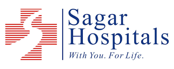

Worklist
STAT/URGENT/ROUTINE
RIS → MONA → EHR
Audit Log: ON
| Case | Modality | Priority | Ref. Doctor | Status |
|---|

Sagar Diagnostics — Powered by MONA-Radiology| Case | Modality | Priority | Ref. Doctor | Status |
|---|